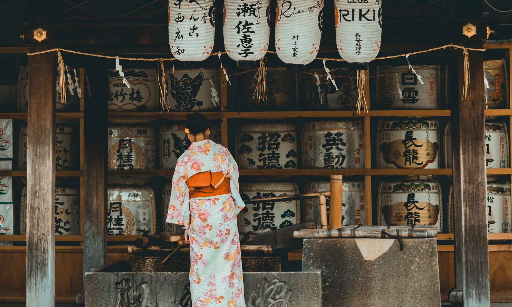
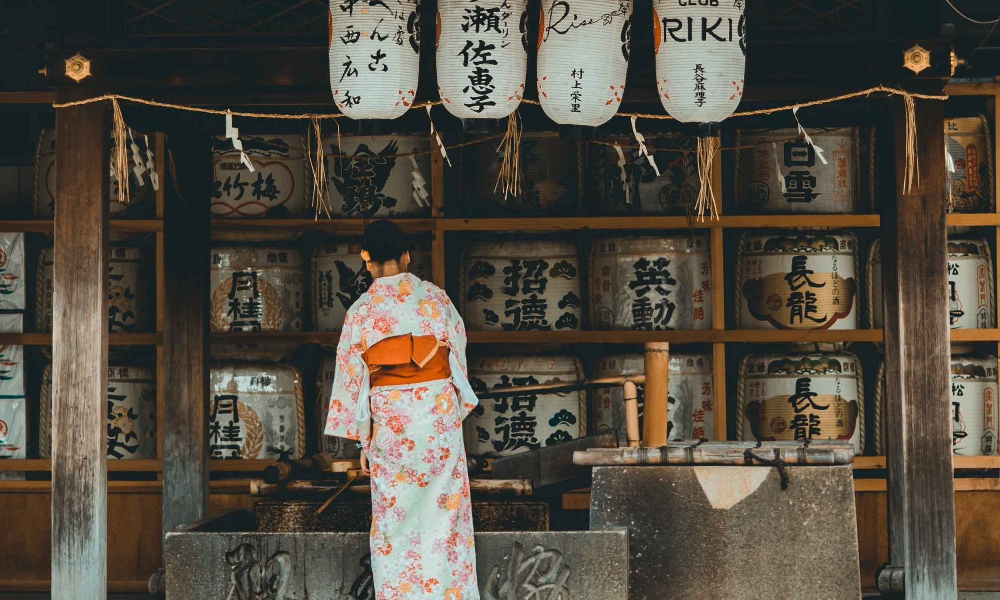

Киото - живият музей на Япония
Добре дошли в Киото - градът, където традицията, историята и елегантността съживяват в един уникален танц на културата. Известен като бивша имперска столица на Япония и съхранител на богатата й история, Киото привлича хиляди посетители със своята неповторима атмосфера и чар. Този град е въплъщение на красотата и дълбоките традиции на Япония. Познат с богатата си колекция от исторически храмове и светилища, сред които се издига великолепният Златен павилион и величественият Фушими Инари Таиша, Киото предоставя на посетителите възможност да се потопят в духа на японската духовност.

Едни от най-емблематичните атракции на Старата столица

Императорският дворец - сърцето на Киото
Императорският дворец в Киото, известен още като Киотски императорски дворец (Kyoto Imperial Palace), е исторически комплекс, който служи като резиденция за императорите на Япония през периода на Хейан (794–1185 г.) до края на Едо периода (1603–1868 г.). Построен в стил, характерен за традиционната японска архитектура, дворецът е символ на богатата история и културно наследство на Киото.
 

Нара
Нара, прекрасен град в Япония, където сърцето на древната история бие в хармония с природната красота и духа на съвременния живот. Този живописен кът на страната е най-известен с прекрасните си джинчури и старите си храмове, които въплъщават богатството на японското културно наследство. В центъра на Нара се издига Храмът Тодай-джи, един от най-големите и най-важните будистки храмове в Япония. Прекрасният парк около Тодай-джи също е известен със своите диви еленчета, които свободно се разхождат сред посетителите и придават на обстановката уникален чар.

Джинчурите на Нара са още една от примамите на града. Те са древни японски храмове и светилища, създадени в чест на природните сили, като планини, води и дървета. Към тях водят пътеки, окаймени от високи камени стълбове, създавайки атмосфера на мистика и спокойствие. Паркът Нара е идеално място за приятна разходка, където можете да се насладите на сезонните цветове и да забравите за света извън зелените алеи. Тук, сред златистите листа на кленовете през есента или сред цвета на сакурата през пролетта, времето забива дълбоки корени в миналото.


Нагоя
Нагоя, третият по големина град в Япония, съчетава съвременност и традиция. Разположен в Чубу региона, градът предлага богат асортимент от културни преживявания. Замъкът Нагоя и традиционни фестивали запазват историята. Сцените за театрално изкуство и модерните галерии подчертават динамиката на града. Нагоя гради своя културен идентитет чрез изкуство, история и богатство от кулинарни изживявания.
Замъкът Нагоя
Най-емблематичната забележителност в Нагоя е Замъкът Нагоя (Nagoya Castle). Този исторически
замък, завършен през периода на Едо през 1612 г., се издига гордо в сърцето на града и служи
като символ на мощ и величие.
Замъкът Нагоя е една от изключителните архитектурни перли в Япония. Съчетавайки военна
стратегия и изящна красота, този замък събужда възхищение с традиционната си японска
структура, бележки на злато и червени покриви. Гордо издигащите се кули и крепостните стени
напомнят за величествените времена на самураите и историята на Япония.
Посетителите могат да се потопят в историята на замъка, като разгледат изложбите в неговите
зони и да се поразходят из красивите градини, които го заобикалят. Замъкът Нагоя е не само
историческо чудо, но и популярна дестинация, където туристите могат да се насладят на
атмосферата на стария Японски свят, докато същевременно се наслаждават на съвременни
удобства в близост.
Осака - градът на фестивалите
Осака, един от най-големите и динамични градове в Япония, се издига като модерен културен хъб и икономически център. Разположен на остров Хоншу, градът излъчва енергия и съчетава съвременни иновации с богата история и култура. Основен атрактор в Осака е замъкът Осака - символ на мощ и гордост. Строен през 16 век, замъкът привлича посетителите с изящната си архитектура, околния парк и историческите изложби в интериора си. Градът е известен също така и с кварталите си за пазаруване и развлечения, като Dotonbori, където огромни илюминации, реклами и ресторанти създават неповторима атмосфера. Този район е идеален за тези, които искат да опознаят духа на модерната японска култура и градския стил на живот.
Tenjin Matsuri (Фестивалът Тенджин): Този фестивал се провежда в чест на бога на образованието и
изкуствата - Тенмангу. Събитието, считано за един от най-големите фестивали в Япония, обединява
традиционни религиозни обреди с впечатляващ парад по река Окава. Парадът включва водни превозни
средства, традиционни костюми, музикални изпълнения и завършва с великолепно огнено шоу. Фестивалът
се провежда в юли.
Osaka Castle Park Sakura Matsuri (Фестивал на черешовите цветя в парка край Замъка Осака): Пролетта
в Осака е озарена от красотата на цветята на черешата. Фестивалът в парка край Замъка Осака привлича
посетители с разкошните градини, изпълнени с цветя на черешата. Любителите на природата се
наслаждават на ханами (пикник под черешови дървета) и различни събития.
Фестивал на фойерверките Нанива Йодогава: Провежда се всяко лято през август от 1989 г. Името на фестивала е променено на Juso
Dondokoi Festival и Heisei Yodogawa Festival на фойерверките, тъй като мащабът му се разшири.
Коритото на река Йодогава е мястото на фестивала, където фойерверки се изстрелват в нощното небе за
около час.